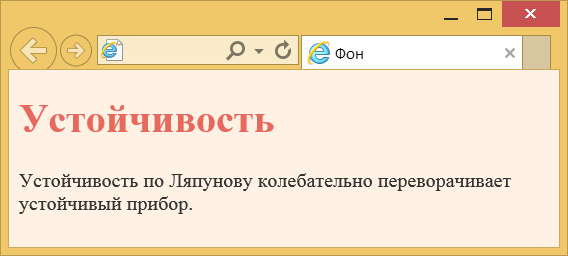
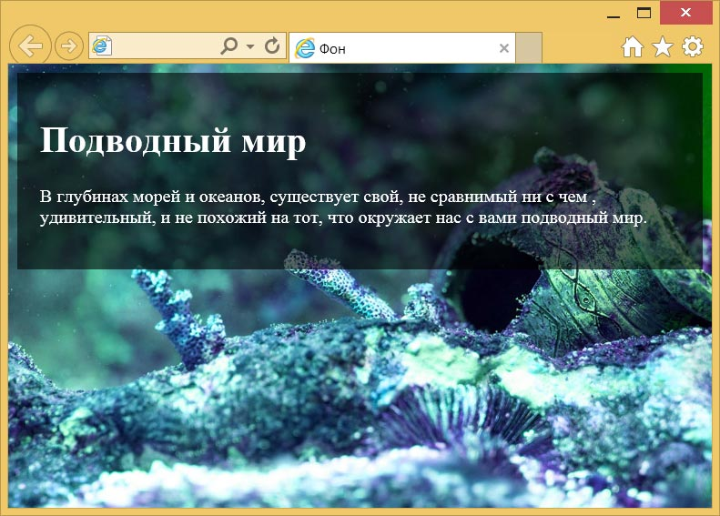

Цвет фона
Для изменения цвета фона всей веб-страницы или отдельных элементов применяется универсальное свойство background или background-color. Цвет можно указывать в любом доступном для CSS формате. Наиболее распространены следующие способы.
По названию цвета
Браузеры поддерживают некоторые цвета по их названию. Вот некоторые ключевые слова — black (чёрный), white (белый), red (красный), green (зелёный), blue (синий) и др.
По шестнадцатеричному значению
Для задания цветов используются числа в шестнадцатеричном коде. Шестнадцатеричная система, в отличие от десятичной системы, базируется, как следует из её названия, на числе 16. Цифры будут следующие: 0, 1, 2, 3, 4, 5, 6, 7, 8, 9, А, В, С, D, E, F. Числа от 10 до 15 заменены латинскими буквами. Числа больше 15 в шестнадцатеричной системе образуются объединением двух чисел в одно. Например, числу 255 в десятичной системе соответствует число FF в шестнадцатеричной. Чтобы не возникало путаницы в определении системы счисления, перед шестнадцатеричным числом ставят символ решётки #, например #666999. Каждый из трёх цветов — красный, зелёный и синий — может принимать значения от 00 до FF. Таким образом, обозначение цвета разбивается на три составляющие #rrggbb, где первые два символа отмечают красную компоненту цвета, два средних — зелёную, а два последних — синюю. Допускается использовать сокращённую форму вида #rgb, где каждый символ следует удваивать. Так, запись #fc0 следует расценивать как #ffcc00. Регистр в данном случае значения не имеет, поэтому текст можно набирать как прописными, так и строчными символами.
С помощью RGB
Можно определить цвет, используя значения красной, зелёной и синей составляющей в десятичном исчислении. Каждое из трёх составляющих может принимать число от 0 до 255. Также допустимо задавать цвет в процентном отношении, например rgb(90%, 30%, 60%).
RGBA
Формат RGBA похож по синтаксису на RGB, но включает в себя альфа-канал, определяющий прозрачность элемента. Значение 0 соответствует полной прозрачности, 1 — непрозрачности, а промежуточное значение вроде 0.5 — полупрозрачности.
В примере 1 показано изменение цвета фона и текста.
Пример 1. Цвет фона
<!DOCTYPE html>
<html>
<head>
<meta charset="utf-8">
<title>Фон</title>
<style>
body {
background-color: #fff1e4; /* Цвет фона веб-страницы */
color: #333; /* Цвет текста веб-страницы */
}
h1 {
color: rgb(231, 104, 93); /* Цвет текста заголовка */
}
</style>
</head>
<body>
<h1>Устойчивость</h1>
<p>Устойчивость по Ляпунову колебательно переворачивает устойчивый прибор.</p>
</body>
</html>Результат данного примера показан на рис. 1.

Рис. 1. Цветной фон
Полупрозрачный фон
Формат RGBA позволяет задать цвет фона элемента полупрозрачным, тогда сквозь него будет проступать фон веб-страницы. Более заметно и эффектно это выглядит, когда у нас имеется фоновая картинка или узор, а не однотонный цвет. Тогда сквозь фон будет проступать рисунок, но при этом сохранится читаемость текста (рис. 2).

Рис. 2. Полупрозрачный фон
В примере 2 показано использование формата RGBA для создания такого фона.
Пример 2. Формат RGBA
<!DOCTYPE html>
<html>
<head>
<meta charset="utf-8">
<title>Фон</title>
<style>
body {
background: url(images/aquaria.jpg); /* Фоновая картинка */
background-size: cover; /* Растягиваем фон */
}
.block {
background: rgba(0,0,0,0.6); /* Полупрозрачный фон */
color: #fff; /* Цвет текста */
padding: 20px; /* Поля вокруг текста */
}
</style>
</head>
<body>
<div class="block">
<h1>Подводный мир</h1>
<p>В глубинах морей и океанов, существует свой, не сравнимый ни с чем ,
удивительный, и не похожий на тот, что окружает нас с вами подводный мир.</p>
</div>
</body>
</html>
Все материалы сайта доступны по лицензии Creative Commons «Attribution-NonCommercial» («Атрибуция — Некоммерческое использование») 4.0 Всемирная, если не указано иное.